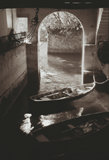

Photo Atelier 2000Radcliffe SeminarsTaught by Holly Smith PedloskyTeaching Assistant: Karen Davis Fridays, 10:30 am-1 pm. February 4 through April 28, 2000
| ||
|  | ||
| Villa Cipressi Boat House | ||
|
registration deadline: January 12 , 2000
(January 10, for financial aid requests)
This is a portfolio-making Seminar for students in any photographic medium, (black and white, color, slides or prints, video, or electronic imaging), who feel ready to produce an emotionally and intellectually focussed body of work. Students in this Seminar will produce a show of their own work which will be exhibited in the galleries of the Schlesinger Library, Radcliffe Yard, during the month of June, 2000. The seminar will meet every week for eleven weeks, from February 4-April 28, 2000. Students and instructors will also take a field trip to the Museum of Fine Arts to view the Edward Weston exhibit. In addition, the group will work together to hang the final show and plan an opening reception. At each meeting, students will bring in their own work-in-progress for group discussion. In addition, each student will produce an Homage Project, bringing in personal work done in response to the work of a chosen artist. Students will have individual access to the Fogg Art Museum's archive of original photographs and to the Harvard Fine Arts Library's collection of books on photography. Holly Smith Pedlosky will offer technical advice and information about camera work and composition; she will give critiques and guidance to participants and show slides of significant historical photographers. Individual conferences with the instructor will be scheduled for each student. Karen Davis will offer darkroom access and advice to a limited number of students. This Seminar is open to intermediate to advanced photographers. Limited enrollment. A fully equipped black and white darkroom will be available to early registrants for an additional lab fee. Holly Smith Pedlosky is an artist, teacher, and fine arts photographer on Cape Cod where she lives. She teaches workshops on Cape Cod, in Venice, and on Lake Como for the Cape Cod Photo Workshops and for the International Center of Photography in New York. She has an international exhibition record, and has recently returned from a year in Venice, where she had a grant to photograph and videotape casalinghe, traditional Venetian housewives, and their art of hanging laundry. Holly shoots color slides, printing her work digitally with Photoshop. Karen Davis is a Cambridge photographer who works with black and white media, using her own darkroom. She has an extensive exhibition record and a artist-made photographic book in the Houghton Library Collection at Harvard University. Karen is a recipient of a 1999 grant from the Massachusetts Foundation for the Humanities.
to register: call Radcliffe Seminars: (617) 495-8600
Radcliffe Seminars, Cronkhite Graduate Center
Taught by Holly Smith Pedlosky | ||
|
Would you like to meet some more Venetian housewives? | Would you like to see
some more Laundry? | Would you like to
find out more about laundry, cloth, and draped fabric in Venetian art? |